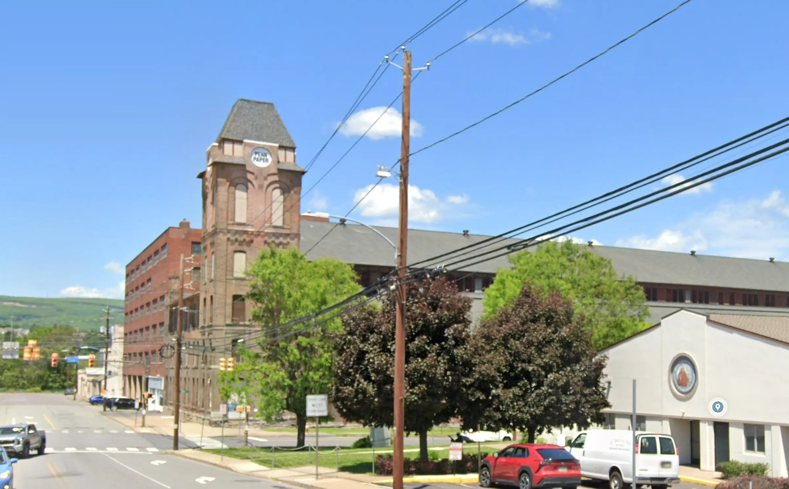
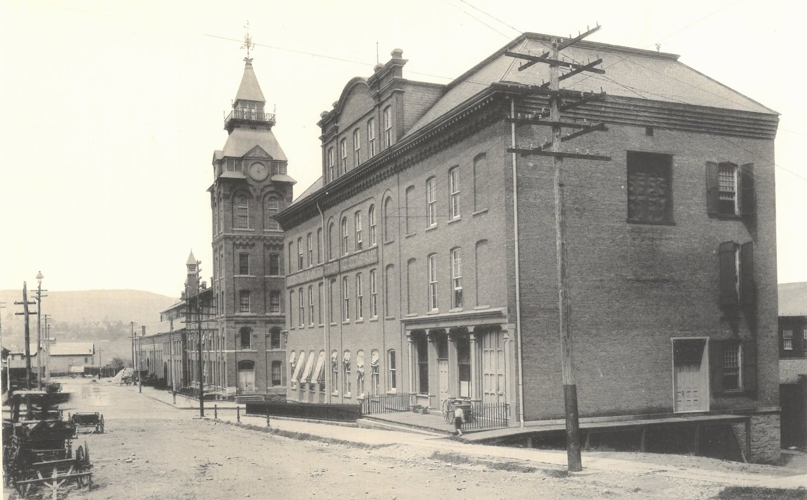

Scranton, Pennsylvania · Then & Now
Dickson
Manufacturing Co.
Thomas Dickson’s works started in 1856 with thirty men and a contract to build engines and boilers for the Delaware & Hudson. By 1890 it employed more than 1,200 and turned out a hundred locomotives a year, alongside hoists and pumps for the mines, rolling-mill engines and waterworks machinery. American Locomotive absorbed the company in 1901. A Dickson engine was still working in Honduras in 1967.


Drag to compare · arrow keys to scrub
ThenPhotograph, the Dickson Manufacturing Company works, Penn Avenue at Vine Street. Undated; the company was absorbed by American Locomotive in 1901, which places it in the 1890s.
NowGoogle Street View, captured May 2026. Imagery © Google.
On the fitA straight crop and a uniform scale — the Street View frame reduced to 0.847 and cropped, with no perspective correction. The tower carries the pair, anchored on the left corner where the corbelled brick band meets it; the two tall arched windows and that band land together. As a check, the tower’s outer edge against the sky, which was not used to fit anything, agrees within about 0.4% of the frame width. Nothing else in the frame is shared. The top of the tower — balcony, clock stage and spire — came down after the works closed, and the corner office block that fills the right of the photograph is gone, with a later warehouse and its parking lot on the ground it stood on.